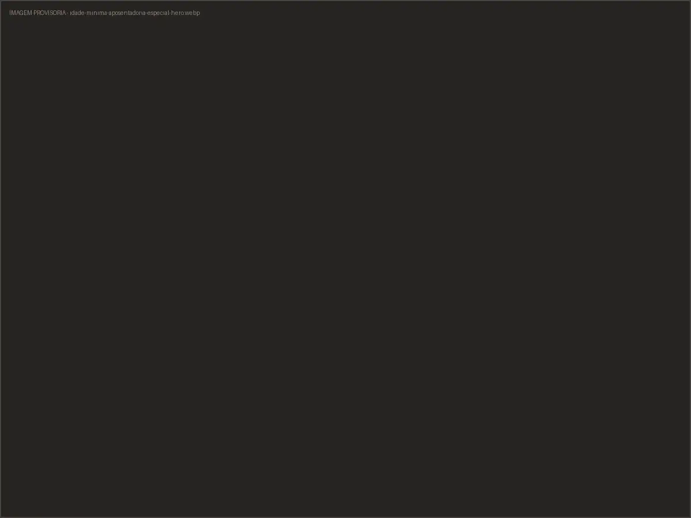

Tempo de exposição
Continuam exigidos 15, 20 ou 25 anos de exposição a agente nocivo, provados por documento da empresa baseado em laudo técnico.
Descobrir minha faixa de tempoSobre a idade mínima aposentadoria especial, a resposta mudou em 2026: em 03/06/2026, o STF derrubou as idades de 55, 58 e 60 anos criadas pela Reforma (ADI 6309). Mas a regra que vale para você depende da data em que começou a contribuir e de quando completou o tempo de exposição. Os embargos de declaração ainda não foram julgados.

Em resumo
Para o INSS, não na regra permanente: o STF derrubou as idades de 55, 58 e 60 anos em 03/06/2026. A decisão ainda pode ser ajustada no julgamento dos embargos de declaração.
A EC 103/2019, a Reforma da Previdência, entrou em vigor em 13/11/2019 e criou idades mínimas para a aposentadoria especial: 55 anos para atividades de 15 anos, 58 anos para as de 20 anos e 60 anos para as de 25 anos. Essas idades estavam no art. 19, § 1º, I, alíneas a, b e c.
O Plenário do STF declarou inconstitucional apenas esse trecho. O acórdão foi publicado no DJe de 02/10/2026. Em outubro, foram apresentados embargos de declaração, um deles pela Advocacia-Geral da União, que estavam com o relator em 23/11/2026. Esses recursos podem definir a partir de quando e para quem a decisão vale.
Esta página responde a uma pergunta prática: qual regra se aplica ao seu caso. A análise completa do julgamento, com votos e andamento, está na página da ADI 6309 no STF.
Depende de duas datas: quando você começou a contribuir para o INSS e quando completou o tempo de exposição. Com essas duas datas, você se encaixa em uma das três linhas da tabela.
| Sua situação | Regra aplicada | O que é exigido | Idade mínima hoje |
|---|---|---|---|
| Completou 15, 20 ou 25 anos de exposição até 13/11/2019 | Direito adquirido (regras anteriores à Reforma) | Tempo de exposição e 180 meses de carência | Nunca houve |
| Começou a contribuir até 13/11/2019, mas não completou o tempo até essa data | Regra de transição por pontos (art. 21 da EC 103/2019) | Tempo de exposição e pontos: 66, 76 ou 86 | Não há idade fixa, mas a idade entra nos pontos. Efeito da ADI 6309 sobre os pontos [CONFIRMAR com o advogado: a regra de pontos do art. 21 continua exigida depois da ADI 6309?] |
| Começou a contribuir depois de 13/11/2019 | Regra permanente (art. 19, § 1º, I, da EC 103/2019) | Tempo de exposição e carência | Idades de 55, 58 e 60 anos derrubadas pela ADI 6309, com embargos pendentes |
Abra o extrato do CNIS no Meu INSS e veja a data da sua primeira contribuição. Depois, some os períodos de exposição que aparecem no PPP de cada empresa até 13/11/2019. Se a soma já fechava 15, 20 ou 25 anos naquela data, você está na primeira linha.
O tempo exigido depende do agente: 25 anos para a maioria, 20 ou 15 anos para casos como amianto e mineração subterrânea. Veja em qual faixa você está na página sobre a aposentadoria especial de 15, 20 e 25 anos.
Carência é o número mínimo de contribuições pagas. Segundo o INSS, a aposentadoria especial exige 180 contribuições mensais, o que equivale a 15 anos. Para a maioria dos trabalhadores com 25 anos de exposição, a carência já está cumprida.
A regra de transição soma a sua idade com o seu tempo de contribuição. Quem já contribuía antes da Reforma precisa atingir 66, 76 ou 86 pontos, além do tempo de exposição de 15, 20 ou 25 anos.
| Tempo de exposição exigido | Pontos (idade + tempo de contribuição) | Exemplo de combinação |
|---|---|---|
| 15 anos (mineração subterrânea na frente de produção) | 66 pontos | 48 anos de idade + 18 anos de contribuição |
| 20 anos (amianto e mineração afastada da frente) | 76 pontos | 53 anos de idade + 23 anos de contribuição |
| 25 anos (a maioria das atividades) | 86 pontos | 58 anos de idade + 28 anos de contribuição |
Os exemplos da tabela são apenas combinações possíveis, não regra fixa. Os pontos são iguais para homens e mulheres, e a EC 103/2019 manda contar a idade e o tempo em dias, não em anos cheios.
Porque, a cada ano, você fica um ano mais velho e soma um ano de contribuição. Veja um exemplo ilustrativo: um trabalhador começou aos 20 anos e completou 25 anos de exposição aos 45. Ele tem 45 + 25 = 70 pontos. Faltam 16 pontos para chegar a 86, o que, continuando a trabalhar, leva cerca de 8 anos.
Nesse exemplo, a regra de transição pediria um tempo extra que a regra permanente, depois da ADI 6309, não pede mais. Essa diferença é justamente o ponto em aberto.
A ADI 6309 tirou só a idade. O tempo de exposição, a proibição de converter tempo especial depois da Reforma e a regra de cálculo do valor continuam valendo.
Continuam exigidos 15, 20 ou 25 anos de exposição a agente nocivo, provados por documento da empresa baseado em laudo técnico.
Descobrir minha faixa de tempoDepois da Reforma, o valor parte de 60% da média dos salários e sobe 2% por ano de contribuição acima do mínimo.
Ver como o valor é calculadoO tempo especial trabalhado depois de 13/11/2019 não pode virar tempo comum. O trabalhado antes ainda pode ser convertido.
Converter meu tempo até 2019Dois ministros, Fachin e Rosa Weber, também queriam derrubar a proibição de conversão e a regra de cálculo, mas ficaram vencidos nesses pontos. Por isso, não confie em textos que dizem que a ADI 6309 "devolveu" as regras antigas por inteiro. O panorama completo das regras está no guia completo da aposentadoria especial.
Primeiro, confirme se a idade foi o único motivo da negativa. Se foi, o caso merece análise agora, porque a ADI 6309 pode mudar o resultado, conforme o que os embargos decidirem sobre os efeitos.
No Meu INSS, abra o pedido e veja todos os motivos. Negativas por idade costumam vir junto com períodos especiais não reconhecidos.
O recurso administrativo ao Conselho de Recursos da Previdência Social (CRPS) tem prazo de 30 dias, contado da ciência da decisão (art. 305, § 1º, do Decreto 3.048/1999). Anote a data em que você foi avisado.
Confira se o PPP de cada empresa mostra agente, intensidade e período corretos. Um erro no PPP pode pesar mais do que a idade.
O resultado pode definir se a decisão alcança pedidos feitos antes de 03/06/2026. Guarde as datas de cada pedido e de cada resposta.
O caminho completo está no guia do recurso contra a aposentadoria especial negada. Se você recebeu outro benefício no lugar da especial, veja os critérios da revisão da aposentadoria especial.
Os erros mais comuns misturam tempo comum com tempo de exposição ou usam a data errada da Reforma. Cada um deles muda a regra em que você se encaixa.
A data de corte é 13/11/2019. Quem completou o tempo um dia antes está no direito adquirido; quem completou depois, não.
Os pontos somam todo o tempo de contribuição, mas o tempo de exposição de 15, 20 ou 25 anos só conta períodos especiais comprovados.
Converter tempo especial trabalhado depois de 13/11/2019 em tempo comum é proibido, mesmo com a ADI 6309.
Quem adiou o pedido para completar 60 anos pode já ter direito hoje. Cada mês de espera pode representar parcelas que não voltam.
A data do pedido é a DER (data de entrada do requerimento), que marca o início dos pagamentos. Por isso, entender a sua regra cedo faz diferença no valor recebido.
Na regra permanente do INSS, não há mais idade mínima: o STF derrubou as idades de 55, 58 e 60 anos em 03/06/2026, na ADI 6309. Os embargos de declaração ainda não foram julgados e podem ajustar os efeitos. Quem está na regra de transição precisa conferir os pontos.
Para quem completou o tempo até 13/11/2019, nunca houve idade. Para quem começou depois da Reforma, a idade caiu com a ADI 6309. Para quem está na regra de transição por pontos, o efeito da decisão ainda precisa ser confirmado [CONFIRMAR com o advogado: a ADI 6309 afasta a exigência de pontos na regra de transição do art. 21?].
O art. 21 da EC 103/2019, que traz os 66, 76 e 86 pontos, não está na parte declarada inconstitucional pelo STF. Se ele continua sendo exigido de quem já contribuía antes da Reforma é ponto em aberto, a confirmar com o advogado e com os embargos [CONFIRMAR com o advogado: o art. 21 continua sendo exigido de quem já contribuía antes da Reforma?].
Não. O tempo de exposição e os pontos da regra de transição são iguais para homens e mulheres. A diferença para a mulher aparece no cálculo do valor e no fator de conversão do tempo especial em comum.
Depende do seu caso. A data do pedido marca o início dos pagamentos, e esperar pode significar perder parcelas. Por outro lado, um pedido mal instruído pode ser negado. O ideal é conferir os documentos e a regra aplicável antes de decidir.
A decisão tratou das idades da aposentadoria especial do INSS, previstas no art. 19 da EC 103/2019. Servidores públicos têm regras próprias, que dependem do ente (União, estado ou município) e precisam ser analisadas à parte [CONFIRMAR com o advogado: a ADI 6309 tem algum reflexo nas regras de aposentadoria especial dos servidores?].
Não. Quem fechou 15, 20 ou 25 anos de exposição até 13/11/2019 tem direito adquirido às regras anteriores, que não exigiam idade. Basta provar o tempo especial e a carência, mesmo que o pedido seja feito hoje.
Informe os períodos antes e depois de 13/11/2019 e veja em qual regra você se encaixa.
Qual o valor da aposentadoria especial: regra da Reforma (60% + 2%), exceção de 15 anos e exemplos em reais. Envie…
Ler sobre valor e cálculo da aposentadoria especialAposentadoria especial de 15, 20 e 25 anos: tabela de grau de risco, agentes e profissões, e como somar tempos…
Ler sobre aposentadoria especial de 15, 20 e 25 anosComo pedir aposentadoria especial no Meu INSS: documentos, passo a passo, prazo de resposta e exigências. Envie seu…
Ler sobre como pedir a aposentadoria especialAposentadoria especial do contribuinte individual: Tema 1291 do STJ, como o autônomo prova a exposição e checklist.…
Ler sobre aposentadoria especial do contribuinte individual e autônomo![Retrato do advogado Dr. Renato [PREENCHER: sobrenome]](../../assets/img/advogado-retrato.webp)
Dr. Renato [PREENCHER: sobrenome]
OAB/GO [PREENCHER] · Advogado previdenciário com atuação em aposentadoria especial e PPP.